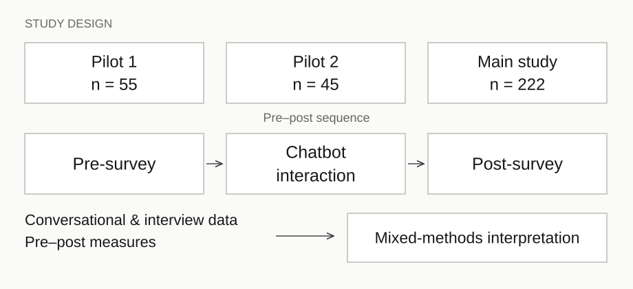
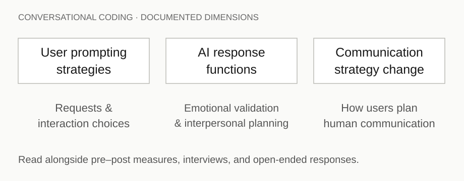

01 / Observe · Empirical foundation · Agency · Expression
AI-Assisted Interpersonal Communication
Can AI improve communication without improving the communicator?
Analysis ongoing · Manuscript in preparation
01 / Question
In conflict, apology, emotional uncertainty, and difficult self-expression, AI can help people decide what to say. Whether the person becomes better able to interpret and respond independently is a separate question.
02 / Invention & Method
Distinguish assisted performance from independent competence. A response can feel more sincere or easier to use while its author feels less ownership. These outcomes should be measured separately, rather than collapsed into a single claim that AI “helps.”
03 / Mechanism
My role
- Lead theoretical framing and mixed-methods analysis.
- Develop coding frameworks for prompting strategies, emotional validation, interpersonal planning, and changes in communication strategy.
- Integrate chatbot conversations, interviews, open-ended responses, and pre–post measures; translate findings into an online guide and follow-up feedback survey.
The study design and data collection are part of the collaborative project with Professor Hwang. The contributions above describe my individual work.
Study and analysis
The documented sequence is pre-survey → chatbot interaction → post-survey, across two pilots and a 222-person main study. I combine theory-driven coding with mixed-effects analyses of pre–post measures. Conversational coding describes prompting, AI functions, and communication strategies; it is not a test of unaided interpersonal competence.

Conversational coding framework

04 / Evidence
- Pilot 1
- N = 55
- Pilot 2
- N = 45
- Main study
- N = 222
Pre-survey → Chatbot interaction → Post-survey
Preliminary self-report pattern
- Perceived sincerity
- Higher
- Willingness to use AI support
- Higher
- Ownership
- Lower
- Perspective-taking
- Lower
These reported directions do not establish improved independent competence, lasting dependence, or a causal loss of agency. No effect sizes or significance claims are displayed.
The preliminary pattern raises a useful distinction: participants’ experiences of sincerity and ownership can move in different directions. Independent competence after AI withdrawal was not established by these findings.
The case summary supports the sample sizes, constructs, methods, and reported directions shown here. Raw data, effect-size estimates, and complete inferential statistics were not provided for this website update.
05 / Next Experiment
After AI support is withdrawn, do people use their own judgment, consider another person’s perspective, and communicate differently in a subsequent human interaction? Repeated assessment could distinguish immediate assistance from learning over time.
Research artifacts
AI-Assisted Interpersonal Communication and the Trade-Off Between Sincerity and Ownership. Manuscript in preparation for the ICA Annual Conference.